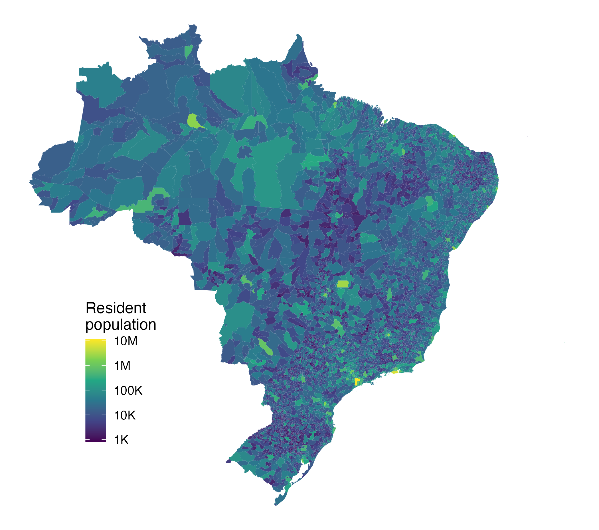

The Brazilian Institute of Geography and Statistics (IBGE) is the agency responsible for Brazil’s official statistics, conducting the national demographic census and dozens of recurring demographic, economic, social and agricultural surveys. Their results are disseminated as aggregate tables through SIDRA (Sistema IBGE de Recuperação Automática) and exposed programmatically by the IBGE Aggregates API [@ibgeapi] — at the time of writing, 9,278 tables from 70 surveys.
ibger is an R [@rcore] package that provides a complete, tidyverse-friendly [@tidyverse] interface to that API. Users can discover tables (ibge_aggregates()), inspect their variables, classifications and categories (ibge_metadata()), list available periods and localities, and retrieve data (ibge_variables()) for any combination of variables, periods, geographic levels — from the whole country down to its 5,570 municipalities — and classification categories. Every function returns a tidy tibble in long format, ready for analysis with standard tidyverse workflows. The package also covers the IBGE Metadata API (survey catalog and methodological documentation) and ships an interactive Shiny explorer for browsing the table catalog. A Python sibling package, ibgepy [@ibgepy], mirrors the same public API, so workflows translate directly between the two languages.
Statement of need
IBGE data underpin quantitative research about Brazil. The Demographic Census, conducted since 1872 and most recently in 2022, is the country’s fundamental source of population counts and the sampling frame for household surveys; the IPCA consumer price index is the official inflation measure targeted by the Central Bank of Brazil; municipal GDP, the PNAD Contínua labor-force survey and the municipal agricultural surveys (PAM, PPM) anchor studies in economics, demography, public health, agriculture and regional planning. SIDRA is the canonical channel through which these aggregates reach the public, and reproducible research requires scripted, validated access to it rather than manual downloads from the website.
The main existing R client, sidrar [@sidrar], accesses the legacy SIDRA API and has served the community well, but it inherits that API’s constraints: a 20,000-value limit per request with no built-in work-around, metadata discovery via HTML scraping, no pre-flight validation, and positional string-coded parameters. ibger targets the modern Aggregates API v3, whose structured JSON metadata endpoints make a fundamentally different design possible (validation, size estimation and automatic chunking, described below).
ibger also complements a growing ecosystem of R packages for Brazilian public data: geobr [@geobr] distributes IBGE’s official spatial data sets, censobr [@censobr] provides census microdata, and PNADcIBGE [@pnadcibge] covers labor-survey microdata. None of them accesses the aggregate tables in SIDRA, which is precisely the layer ibger covers; as the example below shows, the packages compose naturally. ibger grew out of the production needs of Pernambuco’s Strategic Monitoring Data Science Team, which builds R-based data solutions for monitoring state public policies [@medeiros2025], and is aimed at researchers, statistical agencies, journalists and analysts who need reliable, reproducible pipelines over Brazilian official statistics.
Design and implementation
Three design decisions distinguish ibger. First, queries are validated before any request is sent: parameters are checked against cached table metadata, and invalid variables, periods, localities or categories produce immediate, informative errors listing the allowed values. Second, results are transparently chunked: the Aggregates API rejects large requests (empirically, above roughly 50,000 values, although the documented limit is 100,000), so ibger estimates the result size in advance — variables × periods × localities × categories — and automatically splits oversized queries into multiple requests, by periods and then by localities, combining them into a single tibble. A full extraction of table 1612 (municipal crop production: 8 variables × 6 years × 5,570 municipalities, about 267,000 values) therefore works out of the box instead of failing with an HTTP error. Third, parse_sidra_url() and fetch_sidra_url() translate legacy SIDRA API URLs (from the SIDRA Query Builder or existing sidrar scripts) into equivalent ibger calls, easing migration and cross-checking.
HTTP handling is built on httr2 [@httr2] with automatic retries; metadata, period and locality lookups are cached per session; and IBGE’s special value codes (zero, suppressed, not available) are converted by parse_ibge_value(). The package is tested against recorded API fixtures, so its behaviour is verified offline.
Example: mapping the 2022 Demographic Census
The 2022 Census resident population of all 5,570 Brazilian municipalities (table 4709) is retrieved with a single call and joined to the official municipal geometries from geobr for mapping with ggplot2 [@ggplot2]:
library(ibger)
library(ggplot2)
pop <- ibge_variables(4709, variable = 93, periods = 2022,
localities = "N6")
pop$code_muni <- as.numeric(pop$locality_id)
pop$population <- parse_ibge_value(pop$value)
muni <- geobr::read_municipality(year = 2022, simplified = TRUE)
dat <- merge(muni, pop[, c("code_muni", "population")], by = "code_muni")
ggplot(dat) +
geom_sf(aes(fill = population), color = NA) +
scale_fill_viridis_c(trans = "log10") +
theme_void()
ibge_variables() call and mapped with geobr geometries.